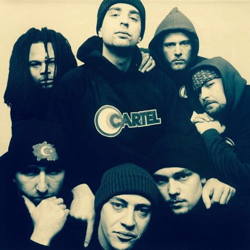

CARTEL(1995)

Grup, Almanya 'da üç ayrı rap grubun bir araya gelmesiyle doğdu. Cartel 'i oluşturan topluluklar, Karakan , Erci E ve Cinai Şebeke 'ydi. Karakan 'ın üyeleri Alper Ağa ve Kâbus Kerim iken, Cinai Şebeke ise M. Ali (Emali) , Babalu (Ichibaba) , Olcay (Ole) ve İnceefe (Çelik bilek Apo) 'den oluşuyordu.
Üyeleri
Alper Ağa (Karakan)(1970)
Erci E (Grubu yok)(1970)
Emali (Cinai Şebeke)(~)
Babalu (Cinai Şebeke)(~)
Olcay (Cinai Şebeke)(~)
Kabus Kerim (Karakan)(1972)
İnceefe (Cinai Şebeke)(~)